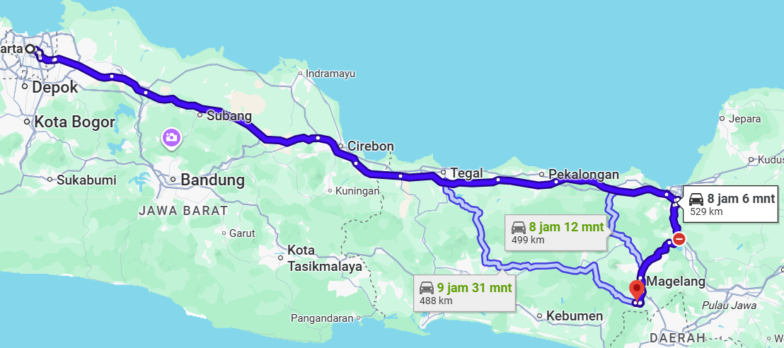
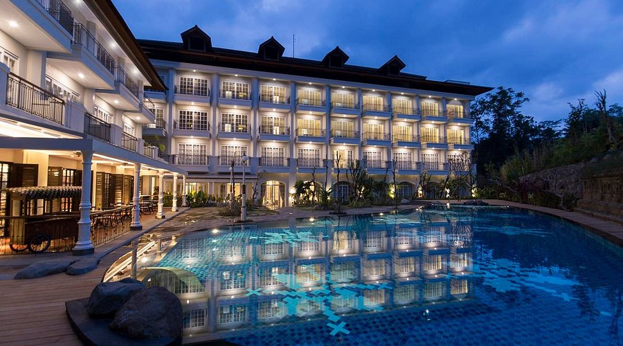
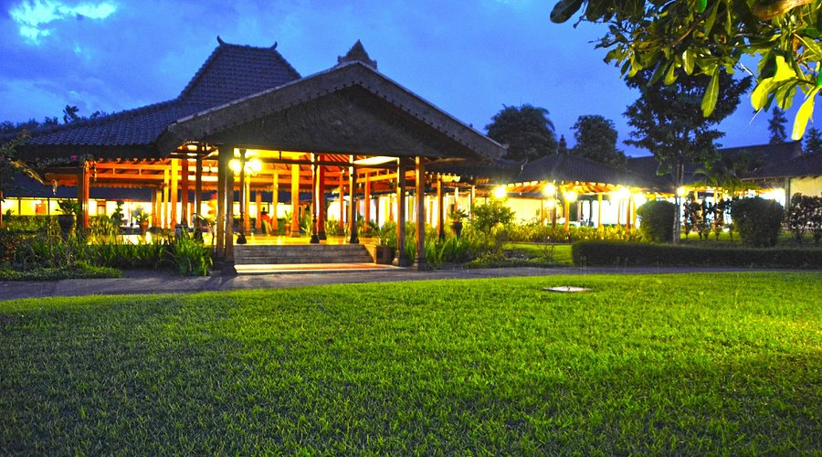
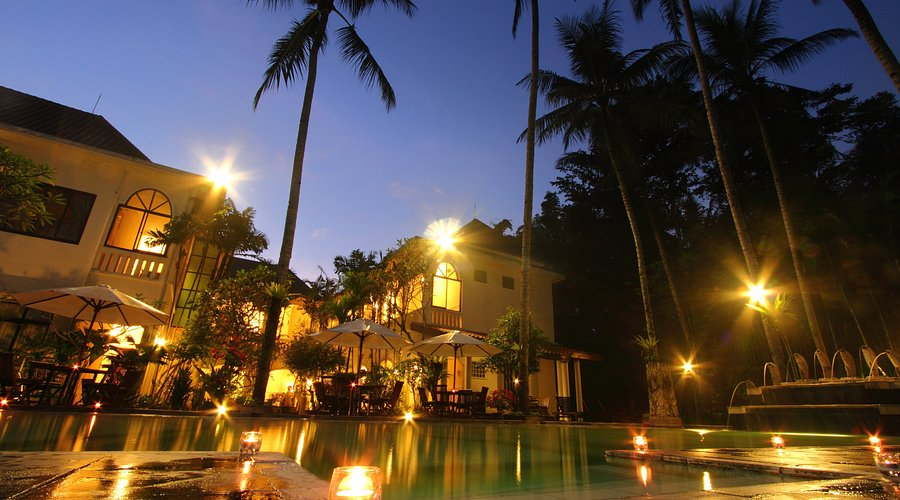

Candi Borobudur merupakan salah satu warisan budaya terbesar di Indonesia yang terletak di Magelang, Jawa Tengah. Candi ini dibangun pada abad ke-9 pada masa pemerintahan Dinasti Syailendra dan dikenal sebagai candi Buddha terbesar di dunia.
Pengunjung dapat menikmati keindahan arsitektur candi sekaligus mempelajari nilai sejarah dan budaya yang terkandung di dalamnya. Dari puncak candi, wisatawan dapat melihat pemandangan alam yang indah dan suasana yang tenang.
Lokasi Anda : Jakarta
📍 Tujuan : Candi Borobudur, Magelang
Jarak : 410 KM
Estimasi Waktu : 8 Jam

Stasiun Gambir → Stasiun Magelang
Jarak: ± 400 km
Estimasi waktu: 6–7 jam
Harga: Mulai dari Rp250.000
Terminal Kampung Rambutan → Terminal Magelang
Estimasi waktu: 7–9 jam
Harga: Mulai dari Rp180.000
Jakarta → Tol Trans Jawa → Magelang
Estimasi waktu: ± 7 jam
Biaya rental: Rp300.000 / hari

🛏 Menginap per malam
🚘 WiFi, Kolam Renang, Restoran
🧑💼 Hotel Bintang 5

🕓 Duration 2 hours
🚘 WiFi, Restoran, Dekat Candi
🧑💼 Resort

🕓 Duration 2 hours
🚘 WiFi, Kolam Renang, Parkir
🧑💼 Hotel

🕓 Duration 2 hours
🚘 Private Villa, Kolam Renang
🧑💼 Villa
Borobudur ternyata jauh lebih bagus dari ekspektasi saya. Tempatnya bersih, suasananya tenang, dan sunrise-nya keren banget. Cocok buat liburan keluarga maupun healing singkat.
Area candinya luas dan tertata rapi. Fasilitasnya lengkap, akses jalannya mudah, dan banyak spot foto yang bagus. Recommended banget buat wisata budaya.